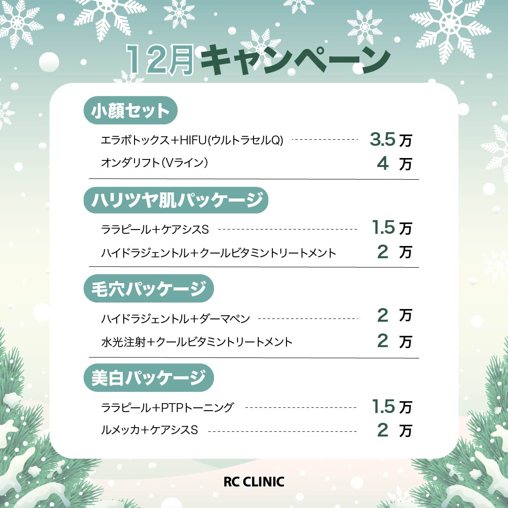

PROFILE
尾花祐香
福岡県出身
心理学科卒業後、美容部員と
美容クリニックでのカウンセラー職を経験
今後は潜在顧客へのアプローチにも関わり、集客力のある情報発信に注力していきたいと考えております
現在、職業訓練校にてWebデザインや動画編集を学び中

FAVORITE
旅行
国内だと京都、海外だと韓国が好きです
ひとり旅だと御朱印巡りが多いです
写真動画を帰ってきて編集し思い出に浸っています
美容
日常から化粧品・洋服等トレンド流行情報集めを楽しんでいます
なんでも試したくなる性格です
SKILL
WORKS
課題1
「水のような日焼け止め」の先行販売のための架空広告
広告物
郵便DMとしても使えるフライヤ-A5両面
告知したいこと
今までにない「水のような」テクスチャーをアピールしたい
ブランド説明
MARKは歴史ある日本のコスメティックブランド
透明の水のような軽やかなテクスチャーの日焼け止めの開発に成功し特許取得主力商品としてアピール


| コンセプト | まるで水 |
|---|---|
| ターゲット | 20〜30代女性 |
| ペルソナ | 23歳 会社員 新卒 女性 朝は時間に余裕がない 環境の変化で、ストレスによるニキビができることもある 働き出してお金に余裕ができ始め、コスメにもお金をかけようと思い始めた 基礎化粧品のデパコスを自分で買うのは初めて |
課題2
架空フィットネスクラブ企画・制作

企画
RCジムの利用者は男性の割合が高く、女性客が気軽に通いづらいため、既に会員の男性が女性を連れてくることで女性客を増やし、継続してもらうための企画 男女ペアにすることで女性も安心して通いやすくなる 一人よりも長期的に続けるためのモチベーションが保ちやすい
ターゲット
30~40代 専業主婦
工夫した点
一目見て何がお得なのかが分かるような見せ方
色：情報欄は元気さ、エネルギッシュさ、親しみを感じるオレンジを選択その他は白と黒に絞った
人物画像：欧米人ではなくアジア人を使用することでイメージしやすく親近感を得られる
キャッチコピー：共感性を求めた。フォントも他と変えることで心の声のような表現を意識した。“無理”というワードで興味を惹かせる
トレースアレンジ
SNS用広告をCanva、Illustrator、Photoshopを使用し、作成しました
-

冬の美肌キャンペーン投稿デザイン
使用ツール:Canva
テンプレート活用冬の乾燥対策をテーマに透明感と潤い感をイメージ
清潔感と上品さをホワイト×ブルーを基調とした配色で信頼感を演出
効果訴求を分かりやすく配置し、キャンペーン価格が一目で伝わるデザインに仕上げた -

12月キャンペーン告知デザイン
使用ツール:Illustrator
韓国ジウクリニック参考背景は季節感と、クリニックらしい清潔感と温かみの両立を意識した画像を選出
カテゴリーごとに見出しを分け、料金情報が一目でわかるよう整理
全体のトーンは落ちついたグリーンで統一し、信頼できる美容医療という印象を与えられるよう意識 -

症例紹介投稿デザイン
使用ツール:Illustrator
湘南美容外科参考Before/Afterの効果を明確に見せる構成
実際のクリニック投稿に多い黒背景と白文字の組み合わせを採用し、清潔感と信頼感を重視したトーンに統一
情報欄には医療広告ガイドラインを意識したバランスで仕上げた